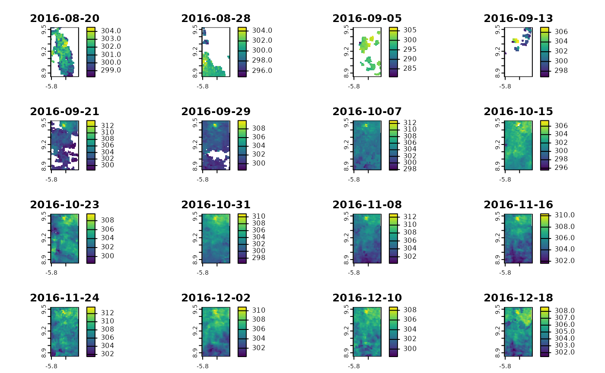
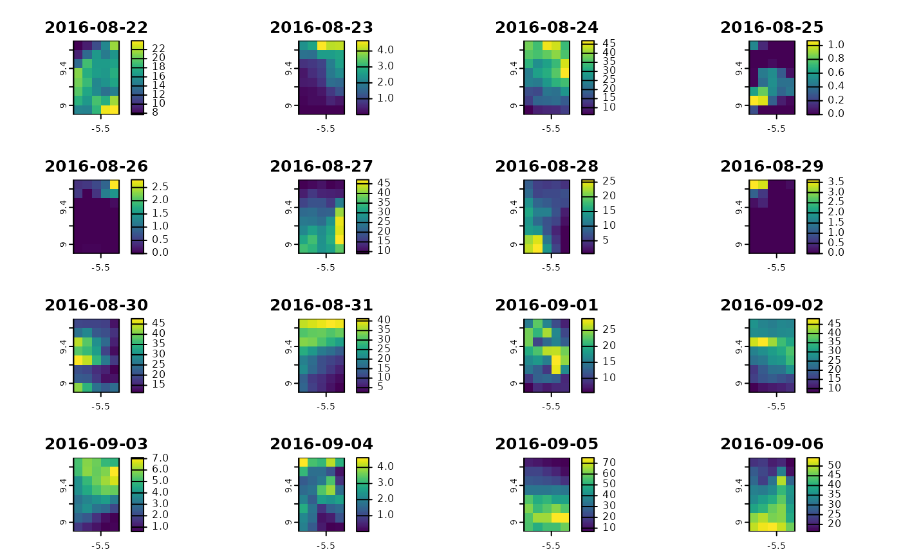
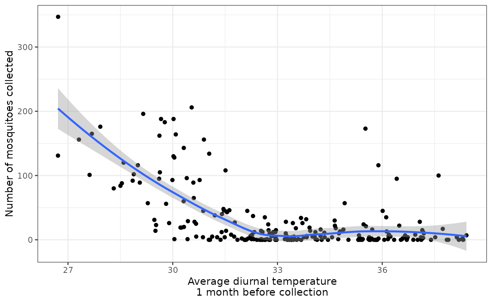
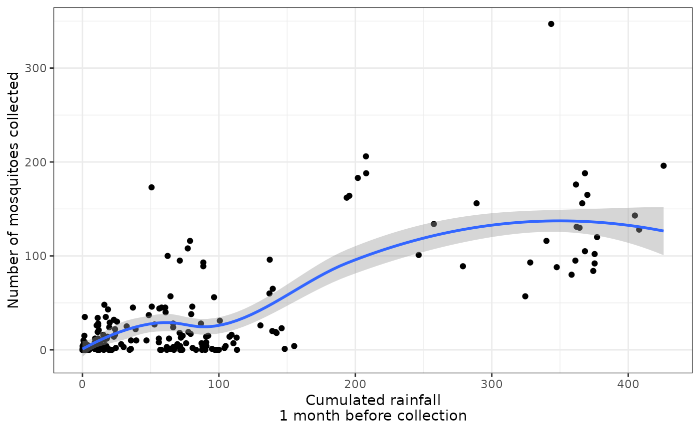

In this use case, we showcase how, starting with a simple table containing sampling-like information (geographical coordinates and dates), it is possible to retrieve meteorological or environmental data around each of these sampling points at chosen lags before the sampling dates.
Here, let’s say that we have a dataset containing abundances of mosquitoes vectors of malaria. These mosquitoes were periodically collected in several villages of a region of Northern Côte d’Ivoire during 1.5 years. In total, 8 entomological surveys took place in 32 villages of this area. In order to analyse the effects of temperature and rainfall on the abundance of these mosquitoes, we want to get the average temperature and cumulated rainfall for each collection point, in a 2-km radius buffer zone, one month before each collection date.
For information, the full ‘real’ dataset was published in the GBIF and exhaustively described in this data paper).
First we load the useful packages :
Then, let’s load the data and have a look at them :
head(entomological_data)
#> mission date village X Y n
#> 1 1 2016-09-21 GUE -5.548970 9.271823 120
#> 2 1 2016-09-21 LOK -5.605484 9.186781 156
#> 3 1 2016-09-21 PEN -5.514849 9.253527 84
#> 4 1 2016-09-22 KOL -5.524137 9.288387 131
#> 5 1 2016-09-23 KAG -5.535555 9.282149 165
#> 6 1 2016-09-23 NOK -5.614132 9.251798 188The first step is to convert this dataset as an sf POINT
object, and then generate its bounding box (ie. area of interest) to get
a POLYGON object (which is the input type for modisfast)
:
entomological_data <- entomological_data %>%
st_as_sf(coords = c("X", "Y"), crs = 4326) %>%
mutate(date = as.Date(date))
roi <- st_bbox(entomological_data)Since we will calculate the meteorological indicators in 2-km radius buffer zones, we need to enlarge a bit the ROI. Here, we enlarge it by 3000 m in all directions (N, S, W, E) and we give the ROI the name “Korhogo” (the name of the main city in the area) :
# function expand_bbox() (Thanks @Chrisjb for the function)
source("https://raw.githubusercontent.com/Chrisjb/basemapR/master/R/expand_bbox.R")
roi <- roi %>%
expand_bbox(.,3000,3000) %>%
sf::st_as_sfc() %>%
sf::st_sf()
roi$id = "korhogo"Next, we define the time range of interest.
Here we will first download the whole time series, and then (in step 3) filter-out the specific dates for each collection point in the next step. So for download, we set the time range as the period going from 30 days before the first collection date to the last collection date.
modisfast
We now download the data using modisfast :
log <- mf_login(credentials = c(Sys.getenv("earthdata_un"),Sys.getenv("earthdata_pw")))
#> Checking credentials...
#> Successfull login to earthdata
urls_mod11a2 <- mf_get_url(
collection = "MOD11A2.061",
variables = c("LST_Day_1km","LST_Night_1km"),
roi = roi,
time_range = time_range )
#> Building the URLs...
#> OK
urls_gpm <- mf_get_url(
collection = "GPM_3IMERGDF.07",
variables = c("precipitation"),
roi = roi,
time_range = time_range )
#> Building the URLs...
#> OK
res_dl_modis <- mf_download_data(urls_mod11a2, path = "data_use_case")
#> 1 datasets in total : 1 already downloaded and 0 datasets to download
#>
#> Data were all properly downloaded under the folder(s) data_use_case/korhogo/MOD11A2.061
res_dl_gpm <- mf_download_data(urls_gpm, path = "data_use_case")
#> 590 datasets in total : 590 already downloaded and 0 datasets to download
#>
#> Data were all properly downloaded under the folder(s) data_use_case/korhogo/GPM_3IMERGDF.07And then we import it in R :
# import MODIS
modis_ts <- mf_import_data(path = dirname(res_dl_modis$destfile[1]),
collection_source = "MODIS")
# import GPM
gpm_ts <- mf_import_data(path = dirname(res_dl_gpm$destfile[1]),
collection_source = "GPM")
plot(modis_ts)
plot(gpm_ts)
Our time series are here, let’s finish the job now !
The last step is to extract the average temperature and cumulated rainfall for each collection point in a 2-km radius buffer zone, one month before each collection date.
Below is some code for this - but feel free to adapt it, there are many ways of doing this, and the code suggested here may not be the best suited to your needs.
# generate a 2-km radius buffer area around each collection point
sp_buffer <- st_buffer(entomological_data, 2000)
# write a function that summarizes the data, given as input :
# - a buffer zone (within which the data will we summarized),
# - a SpatRaster time series,
# - a layer of interest for this SpatRaster,
# - a time range of interest
# - a function to summarize the data for the considered time frame
fun_get_zonal_stat <- function(sp_buffer, raster_ts, variable, min_date, max_date, fun_summarize){
r_sub <- terra::subset(raster_ts, time(raster_ts) >= min_date & time(raster_ts) <= max_date)
r_agg <- terra::app(r_sub[variable], fun_summarize, na.rm = T)
val <- terra::extract(r_agg, sp_buffer, fun = mean, ID = F, touches=TRUE, na.rm = T)
val <- as.numeric(val)
return(val)
}
# split the dataset (needed for the execution of the function)
sp_buffer_split <- split(sp_buffer, seq(nrow(sp_buffer)))
# execute the function to get vectors
LST_1_month_bef <- purrr::map_dbl(sp_buffer_split, ~fun_get_zonal_stat(., modis_ts, "LST_Day_1km", .$date - 30, .$date, "mean"))
rain_1_month_bef <- purrr::map_dbl(sp_buffer_split, ~fun_get_zonal_stat(., gpm_ts, "precipitation", .$date - 30, .$date, "sum"))
# add columns in the original table (entomological_data) containing the extracted temperature and rainfall data
entomological_data$LST_1_month_bef <- LST_1_month_bef - 273.15 # the - 273.15 is to convert the temperature from kelvin to °C
entomological_data$rain_1_month_bef <- rain_1_month_bef
head(entomological_data)
#> Simple feature collection with 6 features and 6 fields
#> Geometry type: POINT
#> Dimension: XY
#> Bounding box: xmin: -5.614132 ymin: 9.186781 xmax: -5.514849 ymax: 9.288387
#> Geodetic CRS: WGS 84
#> mission date village n geometry LST_1_month_bef
#> 1 1 2016-09-21 GUE 120 POINT (-5.54897 9.271823) 28.59190
#> 2 1 2016-09-21 LOK 156 POINT (-5.605484 9.186781) 27.31314
#> 3 1 2016-09-21 PEN 84 POINT (-5.514849 9.253527) 28.50162
#> 4 1 2016-09-22 KOL 131 POINT (-5.524137 9.288387) 26.71242
#> 5 1 2016-09-23 KAG 165 POINT (-5.535555 9.282149) 27.68345
#> 6 1 2016-09-23 NOK 188 POINT (-5.614132 9.251798) 29.66437
#> rain_1_month_bef
#> 1 377.1600
#> 2 366.2787
#> 3 374.3600
#> 4 362.1925
#> 5 370.0350
#> 6 368.2850We can now visualize the data :
# association between diurnal temperature and mosquito abundance
ggplot(entomological_data,aes(x=LST_1_month_bef, y=n)) + geom_point() + geom_smooth() + theme_bw() + labs(x="Average diurnal temperature\n1 month before collection", y = "Number of mosquitoes collected") 
# association between rainfall and mosquito abundance
ggplot(entomological_data,aes(x=rain_1_month_bef, y=n)) + geom_point() + geom_smooth() + theme_bw() + labs(x="Cumulated rainfall\n1 month before collection", y = "Number of mosquitoes collected") 
We see that overall, there is :
There also seem to be non-linear relationships that could be further explored and explained.
Next steps could imply modeling the abundances of mosquitoes using these meteorological data, for explanation or prediction purposes. To go deeper, we could also extract data from more time frames, to better apprehend several aspects of the ecology of the vectors in the study area (eg. impact of meteorological variables at the different life stages of the mosquitoes).
You may see this paper and this one for examples of full data mining works using such data.